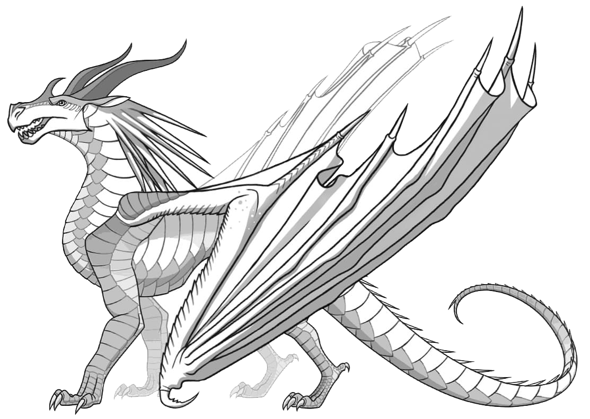

Transmisión manual de 6 veloc.
Intensifica tu conexión con el GR Supra gracias a la Transmisión Manual Inteligente (iMT) de 6 velocidades ahora disponible,
que mejora tus revoluciones al cambiar de marcha. El A91-MT Edition produce 382 caballos de fuerza * y pone 368 lb-pie de torsión al alcance de tus manos.
Toma el control de cada curva mientras la fuerza de gravedad te une con el asiento.
Es el momento de personalizar la potencia enviada a las ruedas traseras y encontrar el punto perfecto donde las revoluciones van a la par con tus latidos.